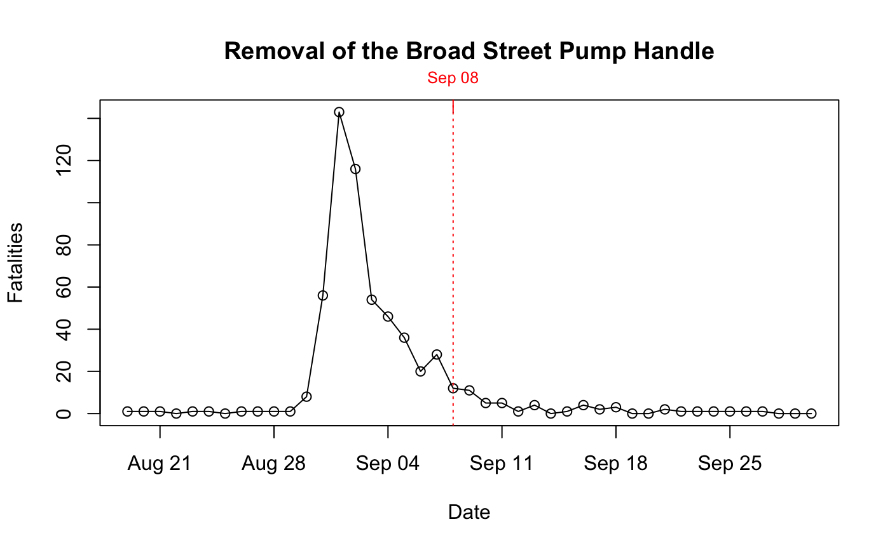

Aggregate time series fatality data from the Vestry report.
timeSeries(vestry = FALSE)
| vestry | Logical. |
|---|
A R list with two objects: "data" and "source" ("snow" or "vestry").
date: Calendar date.
day: Day of the week.
deaths: Measure of fatality.
fatal.attacks: Measure of fatality.
The "snow" data appears on p. 117 of the report; the "vestry" data appear in Appendix B on p.175.
timeSeries(vestry = TRUE)#> date day deaths fatal.attacks #> 1 1854-07-26 Wednesday 0 1 #> 2 1854-08-03 Thursday 0 1 #> 3 1854-08-04 Friday 0 0 #> 4 1854-08-05 Saturday 1 1 #> 5 1854-08-06 Sunday 1 0 #> 6 1854-08-07 Monday 1 1 #> 7 1854-08-08 Tuesday 0 0 #> 8 1854-08-09 Wednesday 0 0 #> 9 1854-08-10 Thursday 0 0 #> 10 1854-08-11 Friday 1 2 #> 11 1854-08-12 Saturday 2 3 #> 12 1854-08-13 Sunday 2 0 #> 13 1854-08-14 Monday 0 3 #> 14 1854-08-15 Tuesday 1 0 #> 15 1854-08-16 Wednesday 2 3 #> 16 1854-08-17 Thursday 2 1 #> 17 1854-08-18 Friday 1 2 #> 18 1854-08-19 Saturday 3 2 #> 19 1854-08-20 Sunday 0 1 #> 20 1854-08-21 Monday 3 2 #> 21 1854-08-22 Tuesday 1 0 #> 22 1854-08-23 Wednesday 0 2 #> 23 1854-08-24 Thursday 3 0 #> 24 1854-08-25 Friday 0 0 #> 25 1854-08-26 Saturday 0 1 #> 26 1854-08-27 Sunday 1 0 #> 27 1854-08-28 Monday 0 3 #> 28 1854-08-29 Tuesday 2 2 #> 29 1854-08-30 Wednesday 2 3 #> 30 1854-08-31 Thursday 4 34 #> 31 1854-09-01 Friday 72 142 #> 32 1854-09-02 Saturday 127 128 #> 33 1854-09-03 Sunday 76 62 #> 34 1854-09-04 Monday 71 55 #> 35 1854-09-05 Tuesday 45 26 #> 36 1854-09-06 Wednesday 40 28 #> 37 1854-09-07 Thursday 34 22 #> 38 1854-09-08 Friday 30 14 #> 39 1854-09-09 Saturday 24 6 #> 40 1854-09-10 Sunday 18 2 #> 41 1854-09-11 Monday 15 3 #> 42 1854-09-12 Tuesday 7 1 #> 43 1854-09-13 Wednesday 13 3 #> 44 1854-09-14 Thursday 6 0 #> 45 1854-09-15 Friday 8 1 #> 46 1854-09-16 Saturday 6 3 #> 47 1854-09-17 Sunday 5 4 #> 48 1854-09-18 Monday 4 0 #> 49 1854-09-19 Tuesday 4 1 #> 50 1854-09-20 Wednesday 1 0 #> 51 1854-09-21 Thursday 0 0 #> 52 1854-09-22 Friday 3 2 #> 53 1854-09-23 Saturday 3 0 #> 54 1854-09-24 Sunday 0 1 #> 55 1854-09-25 Monday 1 0 #> 56 1854-09-26 Tuesday 2 1 #> 57 1854-09-27 Wednesday 0 0 #> 58 1854-09-28 Thursday 2 2 #> 59 1854-09-29 Friday 1 0 #> 60 1854-09-30 Saturday 0 0 #> 61 1854-10-01 Sunday 1 1plot(timeSeries())